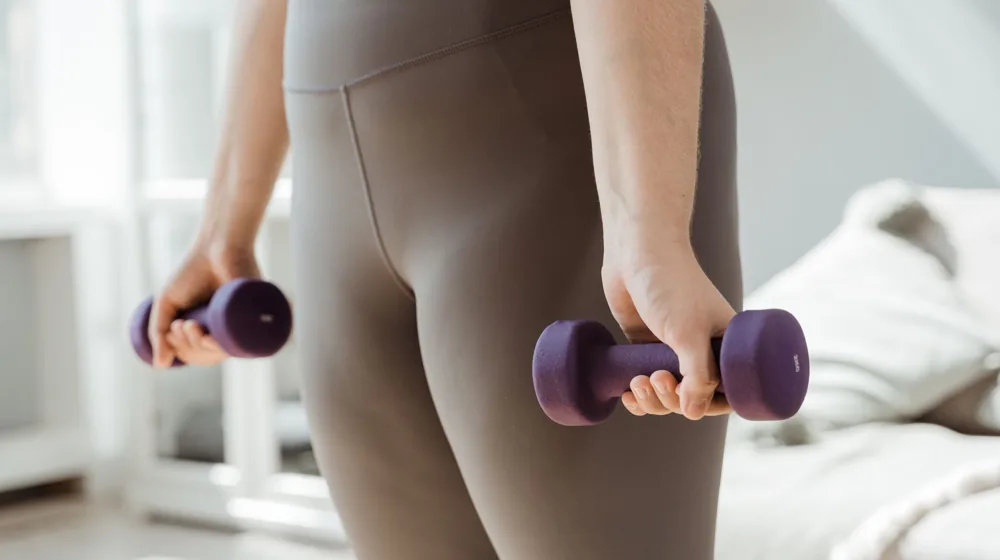

내 몸에 딱 맞는 운동 찾기: 체질별 운동법 체험 가이드와 준비물
사진: MART PRODUCTION / Pexels (무료 이미지, 출처 표기)
내 몸 이해의 첫걸음, 체질 진단부터

자신에게 맞는 운동법을 찾기 위해서는 먼저 '나의 체질'을 정확하게 아는 것이 중요합니다. 한국에서는 사상체질(四象體質) 이론이 가장 널리 알려져 있으며, 태양인, 태음인, 소양인, 소음인 네 가지로 분류됩니다. 각 체질은 신체적 특성과 기질, 질병에 대한 취약성이 다르다고 알려져 있습니다.
체질 진단은 한의학적 지식을 바탕으로 이루어지므로, 가장 정확한 방법은 가까운 한의원에 방문하여 전문 한의사에게 상담받는 것입니다. 진맥, 얼굴 및 체형 관찰, 문진(질문) 등을 통해 종합적인 진단을 받을 수 있습니다. 최근에는 온라인에서 간단한 설문으로 체질을 유추해볼 수 있는 테스트도 많지만, 이는 참고용으로만 활용하고 전문가의 정확한 진단을 받는 것을 권장합니다.
사상체질별 맞춤 운동법 특징과 예시
각 체질의 특성을 이해하면 자신에게 더 효과적이고 부작용이 적은 운동을 선택할 수 있습니다. 아래 표는 각 사상체질의 일반적인 특징과 추천하는 운동, 그리고 주의해야 할 운동을 2026년 11월 기준으로 정리한 것입니다. 이는 일반적인 경향이므로, 개인의 건강 상태에 따라 다를 수 있습니다.
모든 체질은 꾸준하고 균형 잡힌 운동이 중요하며, 특정 체질에 좋다고 하여 과도하게 한 가지 운동만 고집하기보다는 다양한 운동을 병행하는 것이 좋습니다. 운동 전후 스트레칭과 충분한 휴식도 잊지 마세요.
체질별 운동법 체험을 위한 준비물 체크리스트
성공적인 체질별 운동법 체험을 위해 미리 준비해야 할 것들이 있습니다. 다음 체크리스트를 활용하여 빠짐없이 준비해 보세요.
- 편안한 운동복: 활동하기 편하고 통기성이 좋은 소재의 운동복을 준비합니다.
- 운동화: 참여할 운동 종류에 맞는 기능성 운동화를 선택합니다. (예: 런닝화, 실내 운동화)
- 물통 및 수건: 운동 중 수분 보충과 땀을 닦기 위해 필수입니다.
- 체질 진단 결과지: 한의원 등에서 진단받은 체질 결과지를 가져가면 운동 상담 시 도움이 됩니다.
- 개인 건강 기록: 평소 앓고 있는 질환, 특정 부위 통증, 알레르기 등 자신의 건강 상태에 대한 정보를 미리 정리해두면 좋습니다.
- 간단한 필기도구: 운동 시 느낀 점, 강사의 조언 등을 기록하여 나중에 참고할 수 있습니다.
- 긍정적인 마음가짐: 새로운 운동법을 경험하고 내 몸의 변화를 관찰하려는 열린 마음이 중요합니다.
효과적인 체험을 위한 과정과 주의사항
체질별 운동법 체험은 단순히 운동을 따라 하는 것을 넘어, 자신의 몸과 마음이 어떻게 반응하는지 세심하게 관찰하는 과정입니다. 다음과 같은 사항들을 고려하여 더욱 효과적인 체험을 해보세요.
먼저, 체험 프로그램을 선택할 때는 개인 맞춤형 지도를 제공하는 곳인지 확인하는 것이 좋습니다. 일반적인 그룹 수업보다는 소규모 레슨이나 개인 트레이닝이 자신의 체질에 맞는 운동법을 익히는 데 더 도움이 될 수 있습니다. 상담 시 자신의 체질과 건강 상태를 명확히 설명하고, 이에 맞는 운동 강도와 방법을 조율해야 합니다.
체험 중에는 몸의 신호에 귀 기울이는 것이 중요합니다. 특정 동작에서 불편함이나 통증이 느껴진다면 즉시 강사에게 알리고 조절해야 합니다. 초반에는 무리하게 운동 강도를 높이기보다는, 가벼운 수준으로 시작하여 몸이 점진적으로 적응하도록 기다려야 합니다. 특히 사상체질별 운동법은 장기적인 관점에서 접근하는 것이 중요하므로, 단기간의 효과보다는 꾸준함에 초점을 맞추세요. 2026년 11월 기준으로 많은 피트니스 센터나 한방 병원에서 체질별 운동 프로그램을 운영하고 있으니, 관심 있는 곳에 문의하여 정확한 내용을 확인하시길 권장합니다.
체질별 운동법, 궁금한 점을 풀어보세요
Q. 집에서 스스로 체질 진단이 가능한가요?
온라인이나 서적을 통해 체질 관련 정보를 얻고 자가 진단을 시도할 수는 있습니다. 하지만 체질 진단은 복합적인 요소를 고려해야 하므로, 전문가의 진단 없이 스스로 판단하는 것은 오류가 있을 수 있습니다. 재미로 해보는 것은 좋지만, 정확한 운동법을 적용하기 위해서는 한의사 등 전문가의 도움을 받는 것이 가장 좋습니다.
Q. 체질에 안 맞는 운동을 하면 어떤 문제가 생길 수 있나요?
체질에 맞지 않는 운동을 지속하면 효율이 떨어질 뿐만 아니라, 특정 신체 부위에 부담을 주거나 에너지를 과도하게 소모하여 피로감을 높일 수 있습니다. 예를 들어, 소음인이 너무 격렬한 운동을 하면 소화 불량이나 기력 저하를 겪을 수 있고, 태양인이 하체 단련 없이 상체 위주 운동만 하면 하체가 더 약해질 수 있습니다. 몸의 균형이 깨지고 스트레스가 쌓일 수도 있습니다.
Q. 체질별 운동법으로 운동 효과는 언제부터 나타날까요?
운동 효과가 나타나는 시점은 개인의 체질, 운동 강도, 지속 기간, 생활 습관 등에 따라 크게 달라집니다. 일반적으로 꾸준히 운동을 시작하면 2~3주 안에 몸의 변화를 느끼기 시작하고, 2~3개월 정도 지나면 눈에 띄는 변화를 경험할 수 있습니다. 체질별 운동법은 단순히 근육을 키우는 것을 넘어, 몸의 균형을 맞추고 전반적인 건강 증진을 목표로 하므로, 장기적인 관점에서 꾸준히 실천하는 것이 중요합니다.
🔗 이 글도 함께 보면 좋아요: 필라테스 vs 요가, 나에게 딱 맞는 운동은? 5가지 핵심 차이 비교